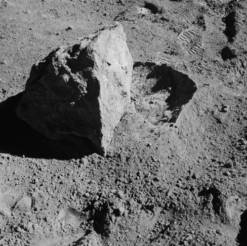
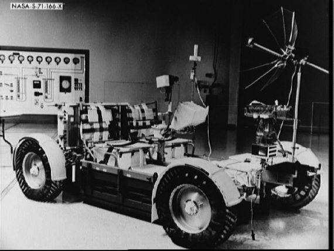
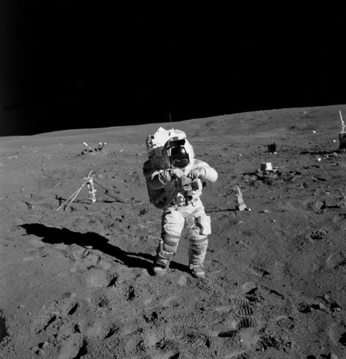
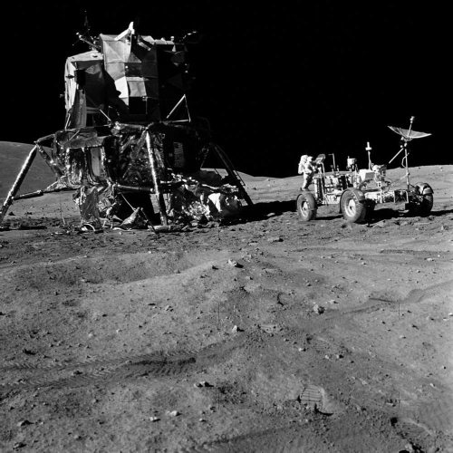
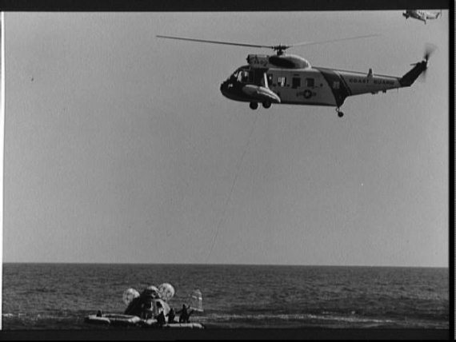

Последние «Аполлоны»
В 1971–1972 годах состоялись еще четыре экспедиции на Луну. Все они завершились благополучно, хотя, если бы не успех «Аполлона-14», лунная программа могла бы завершиться на два года раньше, чем этот произошло на самом деле.
Еще до старта третьей экспедиции стали громко звучать голоса критиков лунной программы, требовавшие прекратить разбазаривание народных денег. «Медвежью услугу» оказали и полеты советских автоматических станций «Луна-16» в сентябре и «Луна-17» в ноябре 1970 года. Общественность задалась вопросом: «Почему надо отправлять на Луну людей, когда русские делают то же самое с помощью автоматов?». На какое-то время НАСА удалось отбиться от нападок, приводя в качестве доводов многочисленные неудачи автоматических межпланетных станций и возможность избежать аварии при наличии на космическом корабле экипажа. К тому же Конгресс поддержал аэрокосмическое управление и разрешил возобновить полеты, прерванные после неудачи «Аполлона-13». И хотя принятое законодателями решение было временным, а перспективы уже не казались безоблачными, как это было во второй половине 1969 года, в НАСА решили использовать выпавший им шанс «на все сто».
Старт «Аполлона-14» состоялся 31 января 1971 года. На свидание с Луной в этот раз отправились Алан Шепард, Стюарт Руса (Roosa Stuart Allen) и Эдгар Митчелл (Edgar Mitchell).
Полет начался с проблемы, которую не ждали. Всего через три часа после старта возникли трудности с перестыковкой лунной кабины. Такая операция входит в полетное задание и предшествует отделению ступени «Сатурн-4Б» носителя. Стюарт Руса точно вогнал «штырь» командного модуля в приемный конус лунного отсека, но соединить два аппарата не удалось – замки не сработали. Попытку повторили еще дважды – не получилось. В четвертый раз время работы двигателей «на прижим» увеличили до 6 секунд. И опять ничего. Пятая попытка из штатной циклограммы. Не работает!

Камень на лунной поверхности
На Земле лихорадочно искали решение. Пора было отделять последнюю ступень носителя, а астронавты еще не завершили предыдущую операцию. Командный модуль отвели от лунного и решили повторить все действия с самого начала. На этот раз все получилось как надо, хотя касание аппаратов прошло гораздо жестче, чем раньше. И у членов экипажа, и у сотрудников Центра управления полетом в Хьюстоне возникла предательская мысль: «А что, если и на окололунной орбите произойдет то же самое?». Но об этом решили пока не думать. Впереди были еще трое суток полета, в течение которых можно было что-то изобрести. Так, на всякий случай.
Полет по трассе «Земля-Луна» прошел без затруднений, и 4 февраля корабль вышел на селеноцентрическую орбиту. На следующее утро Шепард и Митчелл стали готовиться к посадке.
Новые проблемы возникли тогда, когда лунный модуль уже отстыковался от командного отсека и астронавты начали проводить предпосадочные тесты. Тут-то и выяснилось, что нажата кнопка «Abort» или, как ее называют астронавты, «кнопка паники». Ее следовало нажать, если бы лунный модуль потерпел аварию во время посадки. Тогда произошло бы экстренное разделение взлетной и посадочной ступеней, и экипаж на автопилоте полетел к командному модулю. Сначала посчитали, что кто-то из астронавтов случайно задел кнопку. По команде с Земли настройки навигационной системы восстановили, но через час кнопка вновь оказалась нажатой. Стало ясно, что где-то в электросети есть «блуждающий контакт» – капелька припоя, которая замыкает цепь тогда, когда этого делать не надо.
Что делать? Разработчика программного обеспечения Дональда Айлза (Donald Eyles) вытащили из постели и срочно доставили на машине ВВС в Массачусетский технологический институт. Он прибыл туда в пальто поверх пижамы и в домашних тапочках. Но нужную программу написал, и ее успели передать на селеноцентрическую орбиту. В этот момент лунный модуль уже пошел на свой предпосадочный виток. Теперь астронавты знали, как можно обмануть компьютер, если он опять «не захочет» разрешить посадку.
Казалось бы, последнее препятствие устранено, Шепарду и Митчеллу остается только сесть на Луну. Не тут-то было. Когда лунная кабина шла на снижение, выяснилось, что не работает радар. Садиться без него категорически запрещала инструкция. Выход из ситуации нашел Фрэд Хейз в Хьюстоне. Он предложил астронавтам перезапустить радар и тот наконец-то стал «давать картинку».
Дальше все пошло как по маслу. Взяв управление на себя, Шепард посадил лунный модуль «Антарес» в районе кратера Фра Мауро. Подготовив кабину к долгой стоянке, перекусив и надев ранцы системы жизнеобеспечения, астронавты вышли на поверхность Луны.
Первые минуты пребывания Шепарда и Митчелла на лунной поверхности напоминали предыдущие две экспедиции. Как и их предшественники, они провели все необходимые мероприятия на случай экстренного взлета. А потом отправились в свою первую на Луне прогулку.

Луноход для ««Аполлона»
Им было чуть легче, чем Армстронгу, Олдрину, Конраду и Бину. Они уже знали, куда прибыли. Да и в наборе инструментов теперь была двухколесная тележка, на которой можно было перевозить оборудование, и куда можно было складывать собранные образцы грунта. На этой же тележке можно было транспортировать и астронавта, если бы с кем-то их них что-то случилось.
Первой задачей Шепарда и Митчелла во время лунной прогулки стала, естественно, установка американского флага. И только после этого они погрузили на тележку комплекс приборов ALSEP-3 и отправились подальше от «Антареса», чтобы там развернуть оборудование. В комплект входили активный и пассивный сейсмометры, детекторы ионов, лазерный отражатель и многое другое. Активный сейсмометр представлял собой небольшую мортиру, заряженную четырьмя гранатами. Ими должны были выстрелить после отлета экипажа и изучить внутреннее строение Луны.
В кабину астронавты возвратились в прекрасном настроении. Уже забылись волнения во время посадки, и стало ясно, чем им предстоит заниматься в ближайшие двое суток, поэтому можно было поделиться впечатлениями и немного отдохнуть.
Второй выход состоялся 6 февраля. Шепарду и Митчеллу предстояло совершить пешую прогулку до кратера Коул. Астронавты прекрасно видели свою цель, но. так и не добрались до вала кратера. Выяснилась одна маленькая деталь: составленная на Земле карта лунной поверхности не позволяла ориентироваться на местности. Астронавты долго блуждали вокруг Коула и были буквально в двух шагах от него. Но не заметили. Правда, это не означает, что они много потеряли. По пути они проводили измерения, собирали образцы, одним словом, «получали удовольствие». Так «загулялись», что пришлось возвращаться в кабину чуть ли не бегом – ресурс скафандра приближался к критической отметке.
Вскоре Шепард и Митчелл покинули лунную поверхность. Потом была встреча со Стюартом Русой на селеноцентрической орбите и путь домой, который прошел без затруднений. 9 февраля «Аполлон-14» приводнился в Тихом океане.
Следующий полет, состоявшийся в июле-августе 1971 года, стал первой миссией, когда продолжительность пребывания астронавтов на Луне составила трое суток. Отличием стало и то, что теперь астронавтам не надо было совершать многокилометровые пешие переходы. Для удобства в комплект технических средств был включен луноход, который и должен был возить астронавтов по Луне. Были и другие отличия в конструкцях как самого лунного модуля, так и скафандров астронавтов.

Астронавт Джон Янг на поверхности Луны
Старт «Аполлона-15», который пилотировали Дэвид Скотт, Альфред Уорден (Alfred Worden) и Джеймс Ирвин (James Irvin), состоялся 26 июля. Путь до Луны экипаж преодолел без всяких затруднений. Заминка возникла на двенадцатом витке по селеноцентрической орбите, когда пришла пора отделения лунной кабины: два модуля корабля не разделились. Оказалось, что отошел один из электроразъемов. Уорден пробрался в переходный туннель и поправил отошедший провод. Расстыковка состоялась на 25 минут позже графика.
Впервые посадка происходила в районе каньона Хэдли Рилл, у подножия лунных Апеннин. Опыта таких прилунений еще не было, поэтому касание кабины о поверхность было достаточно жестким. Вслед за этим модуль стал заваливаться налево и «на спину». Но конструкция выдержала. Выдержали и астронавты.
Как я уже отметил, полет «Аполлона-15» был первой миссией с трехсуточным пребыванием на Луне. Увеличение продолжительности лунной экспедиции позволяло астронавтам совершить три выхода на поверхность. И, естественно, выполнить больший комплекс исследований. Наличие лунохода еще расширяло их возможности. Правда, со сборкой этой машины возникли небольшие затруднения. На Земле она раскладывалась из транспортного положения без всяких затруднений. А вот на Луне заартачилась. Но, в конце концов, астронавтам удалось с ней справиться.
Луноход действительно здорово помог Скотту и Ирвину. Они смогли удалиться от лунного модуля на многие километры, провести изучение достаточно удаленных от места посадки объектов, собрать значительное количество образцов грунта. Как обычно, астронавты развернули комплект научного оборудования.
Трое лунных суток пролетели незаметно, и вот пришла пора покидать Луну. Взлет и стыковка с командным модулем оказались чуть ли не самыми простыми операциями из того, что пришлось сделать Ирвину в ходе полета.
И еще два пункта программы «Аполлона-15» надо отметить, как сделанные впервые. 4 августа от командного модуля, который еще находился на селеноцентрической орбите, был отделен субспутник, а 5 августа на трассе «Луна-Земля» Альфред Уорден вышел в открытый космос. До возвращения домой еще оставалось 300 тысяч километров и двое суток пути.
Состоявшиеся в 1972 году полеты «Аполлона-16» и «Аполлона-17» стали завершающими в лунной программе США. Не буду подробно о них рассказывать, так как в них было гораздо меньше новизны, чем в предыдущих миссиях, да и неприятностей на долю экипажей выпало несравненно меньше.
Укажу только экипажи да районы посадок лунных модулей.

Экипаж «Аполлона-16» на Луне
В апреле на «Аполлоне-16» в космосе побывали Джон Янг, Томас Маттингли и Чарльз Дьюк (Charles Duke). Местом высадки Янга и Дьюка стал район кратера Декарт.
Завершили «лунную эпопею» Юджин Сернан, Рональд Эванс (Ronald Evans) и Харрисон Шмитт (Harrison Schmitt) на «Аполлоне-17» в декабре. Двое астронавтов провели трое суток в районе Тавров-Литтров.
Кроме тех полетов, о которых было написано выше, в рамках программы «Аполлон» было запланировано проведение еще трех лунных экспедиций. Их подготовка велась вплоть до 1970 года, когда правительство США решило сократить финансирование программы и переадресовать средства на выполнение других проектов. Корабли, изготовление которых было в самом разгаре, были в дальнейшем использованы для полетов на орбитальную станцию «Скайлэб», а планы неосуществленных лунных экспедиций остались лишь строчками в истории освоения космоса.
Согласно первоначальным планам, сформулированным еще в июле 1969 года, сразу после первой высадки на Луну, «Аполлон-18» должен был стартовать в феврале 1972 года, «Аполлон-19» – в июле 1972 года, «Аполлон-20» – в декабре 1972 года. Местами посадок должны были стать долина Шретера, район расщелины Гигин и кратер Коперника соответственно. Тогда же были объявлены составы экипажей, которым предстояло готовиться к этим миссиям.
В экипажи «Аполлона-18» были включены астронавты Ричард Гордон (Richard Gordon), Вэнс Бранд (Vance Brand) и Харрисон Шмитт (Harrison Schmitt) (основной), и Джозеф Аллен (Joseph Allen), Карл Хенице (Carl Henize) и Роберт Паркер (Robert Parker) (дублирующий). К полету на «Аполлоне-19» должны были готовиться Фрэд Хейз (Fred Haise), Уильям Поуг (William Pogue) и Джеральд Карр (Gerald Carr) (основной экипаж) и Энтони Инглэнд (Anthony England), Генри Хартсфилд (Henry Hartsfield) и Дональд Петерсон (Donald Peterson) (дублирующий экипаж). Для «Аполлона-20» успели назвать только основной экипаж – Стюарт Руса (Stuart Roosa), Дон Линд (Lind Don), Джек Лусма (Lousma Jack).
В начале 1970 года планы претерпели существенное изменение. Полеты «Аполлона-19» и «Аполлона-20» отменили, а старт «Аполлона-18» был отсрочен до конца 1972 года. Изменилось и место посадки для последнего корабля – кратер Гассенди. Еще одна корректировка произошла сразу же после трудной миссии «Аполлона-13» – полет «Аполлона-18» сдвинули на июль 1973 года. А спустя несколько месяцев и вовсе отменили.

Эвакуация экипажа одного из ««Аполлонов» после приводнения
Из пятнадцати астронавтов, проходивших подготовку в составе экипажей этих кораблей, только для одного – Харрисона Шмитта – лунная эпопея на этом не завершилась. Учитывая его специальность – геолог – Шмитта перевели в экипаж «Аполлона-17», заменив им Джо Энгла, которому также пришлось распрощаться с мечтой о полете к Луне.
Трое из пятнадцати ранее совершили полеты к Луне (Ричард Гордон – на «Аполлоне-12», Фрэд Хейз на «Аполлоне-13» и Стюарт Руса – на «Аполлоне-14»). Если бы не отмена миссий, лунные экспедиции стали бы для них вторыми путешествиями к ночному светилу. Не стали.